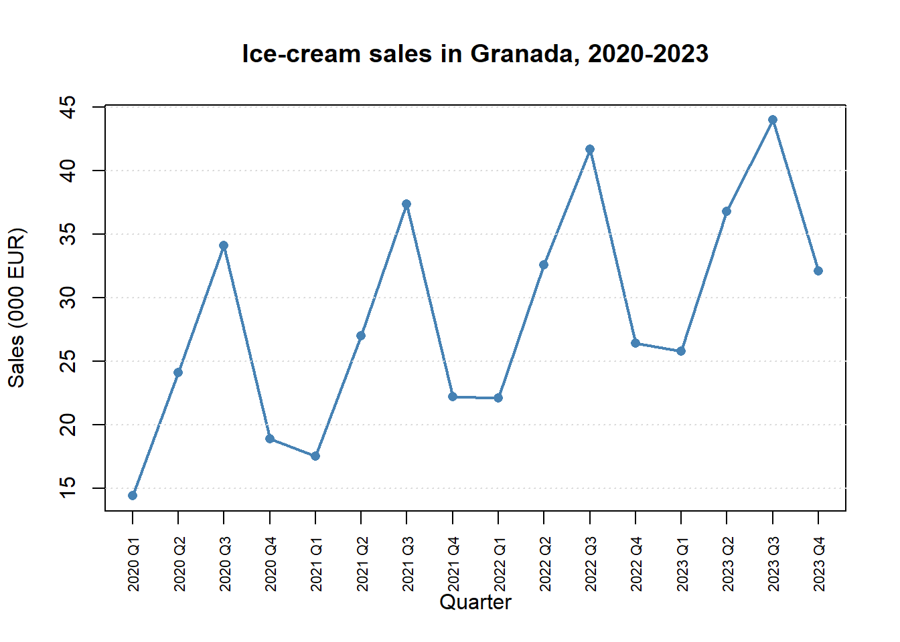
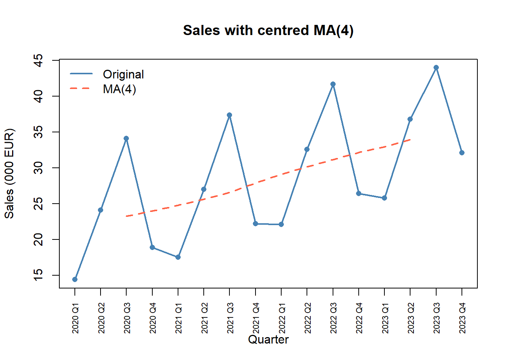
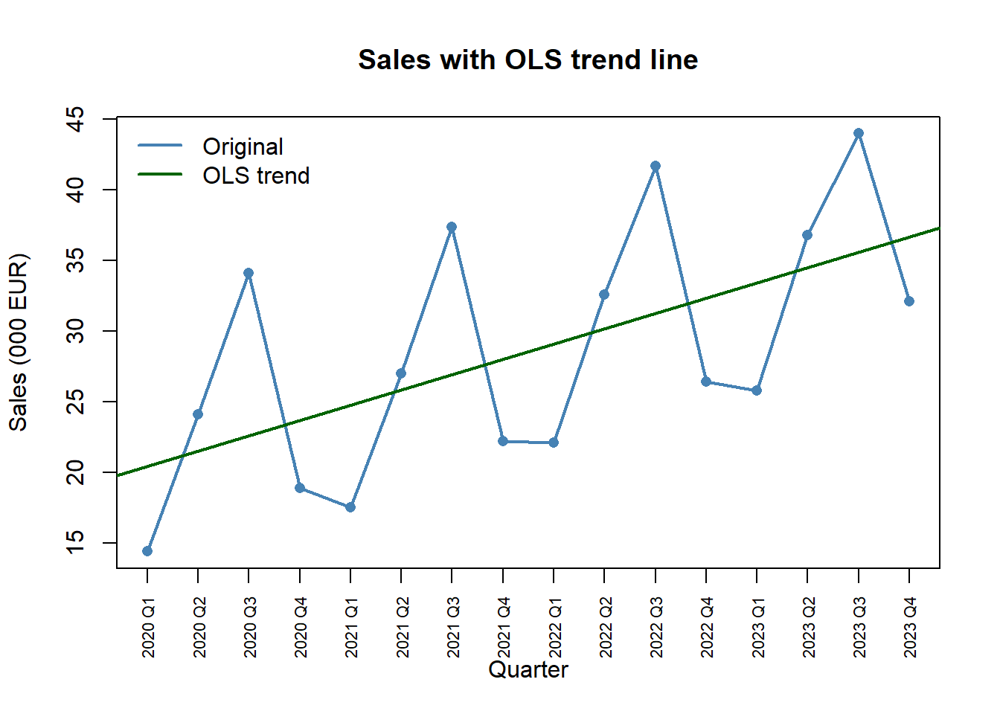
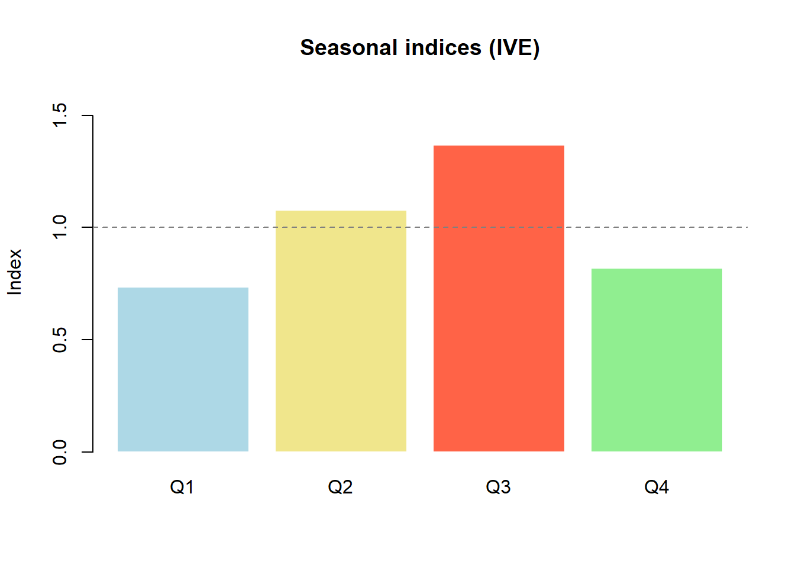
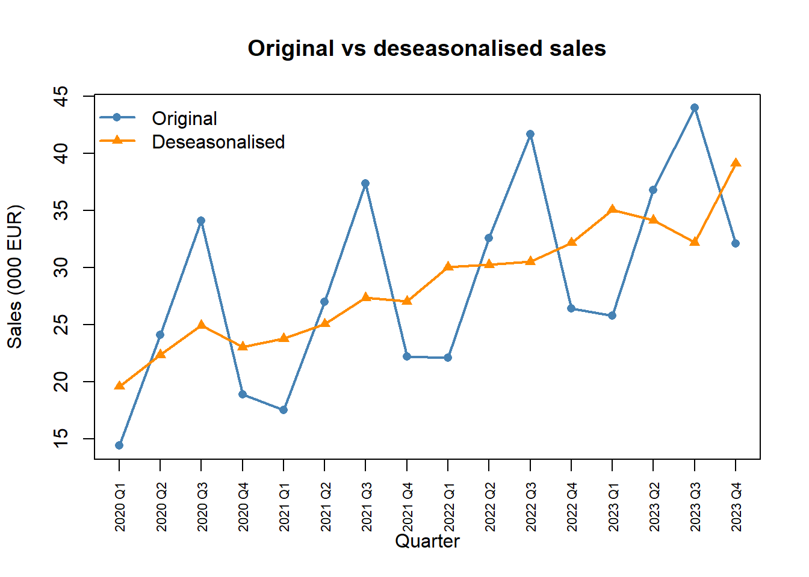
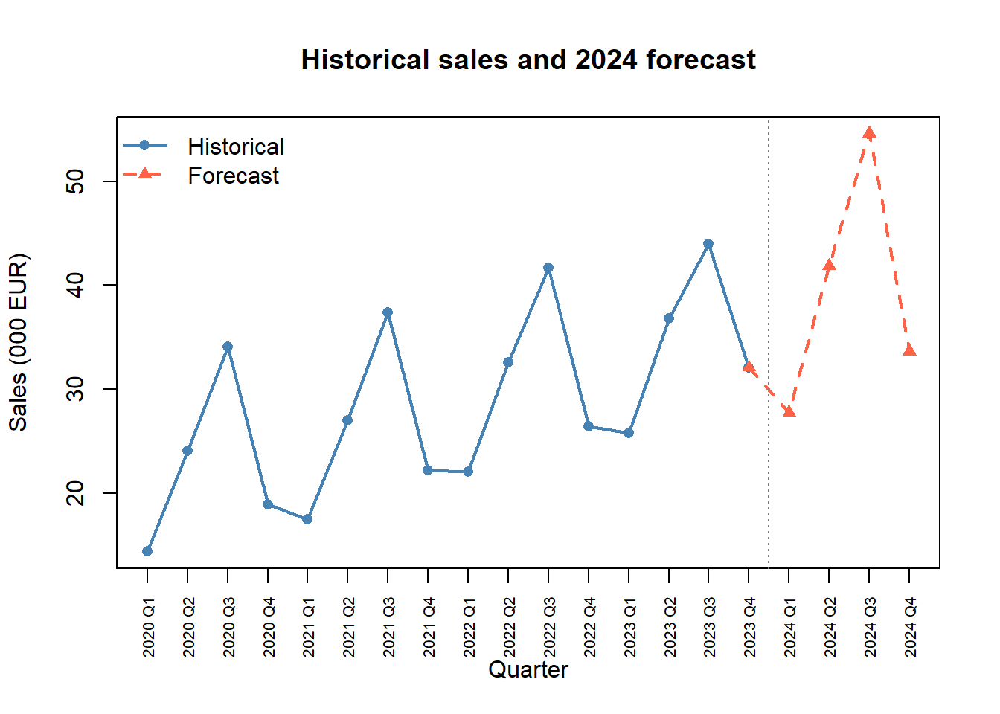

Code
set.seed(2026)Status: ported 2026-05-19. Reviewed by editor: pending.
By the end of this chapter the reader should be able to:
Quarterly tourism in Málaga peaks every summer and grows year on year — how do we separate the underlying upward drift from the seasonal swing, and use the two pieces to forecast next year’s quarters?
The chapter is built around quarterly business series — hotel stays, consumer complaints, ice-cream sales, electricity consumption — that exhibit both a smooth long-run movement (trend) and a repeating within-year pattern (seasonality). The running example in the R Lab is quarterly ice-cream sales of a shop in Granada (2020 Q1 – 2023 Q4) with summer peaks and winter troughs.
A time series is a sequence of observations recorded at successive, equally spaced points in time. We denote the value at time \(t\) by \(Y_t\), so a series of length \(n\) is written
\[ Y_1,\; Y_2,\; Y_3,\; \ldots,\; Y_n. \]
Common examples are GDP (quarterly), unemployment (monthly), stock prices (daily), CO\(_2\) concentration, hotel overnight stays, and the Consumer Price Index. The key working assumption is that past patterns persist into the near future — what makes forecasting possible, but also what fails when there is a structural break (a crisis, a pandemic, a policy reform).
A time series of length \(n\) is a sequence \(Y_1, Y_2, \ldots, Y_n\) of observations of a single variable indexed by time. In this chapter \(t\) runs over equally spaced periods (years, quarters, months) and we adopt a univariate point of view: no covariates, no inference, only the structure of \(Y_t\) itself.
The first step in any time-series analysis is always to plot the data. A time plot puts \(t\) on the horizontal axis and \(Y_t\) on the vertical axis, with consecutive points joined by line segments.
Classical decomposition splits \(Y_t\) into four systematic pieces:
For the short and medium series typical of an introductory course (a few years of quarterly or monthly data), it is common practice to merge the cyclical movement into the trend, writing \(T_t\) for the combined trend–cycle. The remaining decomposition then reads \(Y_t \approx T_t + S_t + I_t\) or \(Y_t \approx T_t \times S_t \times I_t\).
The four components can be combined in two ways.
Additive model.
\[ Y_t \;=\; T_t \;+\; S_t \;+\; C_t \;+\; I_t. \]
Every component is in the units of \(Y_t\). A seasonal value \(S_t = +150\) means “150 extra units in this season”.
Multiplicative model.
\[ Y_t \;=\; T_t \;\times\; S_t \;\times\; C_t \;\times\; I_t. \]
Only \(T_t\) carries units; \(S_t, C_t, I_t\) are dimensionless indices centred around \(1\). A value \(S_t = 1.30\) means “30 % above the trend level”.
Inspect the amplitude of the seasonal swings in the time plot:
Most economic series exhibit the multiplicative pattern because percentage fluctuations tend to remain stable while absolute fluctuations grow with the level.
Two complementary descriptive approaches: moving averages (nonparametric smoothing) and ordinary least squares (a parametric line in time).
A moving average replaces each observation by the average of its neighbours, smoothing out short-run noise to reveal the long-run drift.
For data with \(s\) seasons per year:
\[ \text{CMA}_t \;=\; \frac{1}{2s}\bigl(Y_{t-s/2} + 2Y_{t-s/2+1} + \cdots + 2Y_{t+s/2-1} + Y_{t+s/2}\bigr). \]
Two important consequences:
For quarterly data (\(s = 4\)), a simple 4-term MA sits between two quarters. If you label it at the second quarter of the window you bias the trend half a step forward. Always centre by averaging two consecutive 4-term MAs.
The simplest parametric trend is a straight line in time,
\[ \hat{T}_t \;=\; a + b\,t, \qquad t = 1, 2, \ldots, n. \]
The parameters \(a\) and \(b\) are estimated by ordinary least squares — the same machinery as in Chapter 2, with the explanatory variable being the integer time index \(t\). The closed-form estimators are
\[ b \;=\; \frac{n\sum t\,Y_t - \bigl(\sum t\bigr)\bigl(\sum Y_t\bigr)}{n\sum t^2 - \bigl(\sum t\bigr)^2}, \qquad a \;=\; \bar{Y} - b\,\bar{t}. \]
The slope \(b\) is the average change in \(Y_t\) per time period (per quarter for quarterly data, per month for monthly data). The annual trend increment is \(b \times s\).
A consumer-protection office records quarterly complaints from 2013 Q1 to 2016 Q4 (\(n = 16\)). With \(\sum t = 136\), \(\sum Y_t = 1346\), \(\sum t Y_t = 12{,}296\), \(\sum t^2 = 1496\),
\[ b = \frac{16 \times 12296 - 136 \times 1346}{16 \times 1496 - 136^2} = \frac{13680}{5440} \approx 2.515, \qquad a = 84.125 - 2.515 \times 8.5 \approx 62.748. \]
So \(\hat{T}_t = 62.748 + 2.515\,t\). Complaints grow by about \(2.515\) per quarter, or roughly \(10\) per year. The annual increment \(b\times s = 2.515\times 4 \approx 10.06\) confirms this.
| Moving averages | OLS trend | |
|---|---|---|
| Assumptions | None (nonparametric) | Linear (or specified) form |
| Follows local changes | Yes | No (global fit) |
| Loses endpoints | Yes (\(s/2\) each side) | No |
| Forecasting | Not directly | Yes (extrapolate the line) |
| Best for | Exploratory analysis | Forecasting |
Moving averages are the natural first descriptive look; OLS is the natural choice when a linear drift is plausible and we want to extrapolate.
Once the trend is estimated, we quantify the seasonal pattern. The Seasonal Variation Indices (IVE, from the Spanish Índices de Variación Estacional) measure how each season typically deviates from the trend.
In the multiplicative model, \(\text{IVE}_j\) is dimensionless. \(\text{IVE}_j = 1.30\) means season \(j\) is typically \(30\%\) above trend; \(\text{IVE}_j = 0.75\) means \(25\%\) below trend. By construction
\[ \sum_{j=1}^{s}\text{IVE}_j \;=\; s. \]
In the additive model, \(E_j\) is measured in the same units as \(Y_t\). \(E_j = +15\) means season \(j\) is typically \(15\) units above trend; \(E_j = -20\) means \(20\) units below. The constraint is
\[ \sum_{j=1}^{s} E_j \;=\; 0. \]
The standard method for the multiplicative IVE proceeds in four steps:
For the additive model, replace ratios by residuals \(Y_t - \hat{T}_t\), average by season, and normalise so the mean is \(0\) (subtract the overall mean of the seasonal means from each one).
Using \(\hat{T}_t = 62.748 + 2.515\,t\), the per-quarter ratios \(Y_t/\hat{T}_t\) averaged over the four years are
| Q1 | Q2 | Q3 | Q4 | |
|---|---|---|---|---|
| \(\bar{R}_j\) | 0.9210 | 1.2363 | 0.7621 | 1.0803 |
| Sum | 3.9997 |
The sum is essentially \(4\), so \(c \approx 1\) and the adjusted indices are
| Q1 | Q2 | Q3 | Q4 | |
|---|---|---|---|---|
| IVE | 0.9211 | 1.2364 | 0.7622 | 1.0804 |
| IVE % | 92.1% | 123.6% | 76.2% | 108.0% |
Q2 is 23.6% above trend (spring activity), Q3 23.8% below (holiday calm), Q1 7.9% below, Q4 8.0% above.
Raw data can mislead when seasons differ widely — toy sales in March are naturally lower than in December, but does that mean the industry is in trouble? We remove the seasonal effect to see the underlying level.
The deseasonalised series \(Y^*_t\) is what the value would have been in the absence of a seasonal effect — comparable across seasons and easier to read for the trend.
A toy-store example clarifies the intuition. If sales are €400,000 in March (IVE 0.60) and €1,200,000 in December (IVE 1.80), then \[ Y^*_{\text{Mar}} = \frac{400\,000}{0.60} = 666{,}667 = \frac{1\,200\,000}{1.80} = Y^*_{\text{Dec}}. \] After removing the seasonal effect both months show the same underlying level — the apparent gulf was entirely seasonal.
With trend and seasonal indices in hand, forecasting reduces to extending the trend and reapplying the seasonal factor.
We evaluate the OLS trend line at the future \(t\) and multiply (or add) the appropriate seasonal index. The two operations together give a point forecast.
Continuing the complaints example, the data end at \(t = 16\). For 2017 Q1 (\(t = 17\)) and 2017 Q2 (\(t = 18\)):
\[ \hat{T}_{17} = 62.748 + 2.515(17) \approx 105.50, \qquad \hat{Y}_{17} = 105.50 \times 0.9211 \approx 97.18. \]
\[ \hat{T}_{18} = 62.748 + 2.515(18) \approx 108.02, \qquad \hat{Y}_{18} = 108.02 \times 1.2364 \approx 133.56. \]
We predict about \(97\) complaints in Q1 2017 (a quiet quarter) and about \(134\) in Q2 2017 (a busy one). Since seasonal indices used in deflation can also appear in index-number form (see Chapter 6), the close ties between the two topics are worth keeping in mind.
The descriptive forecast \(\hat{Y}_t = \hat{T}_t \times \text{IVE}_j\) is an extrapolation: it answers “what if the past pattern continues?”, not “what would happen under a different policy?” Three caveats:
A worked descriptive analysis of quarterly ice-cream sales for a Granada shop (2020 Q1 – 2023 Q4): trend by moving averages and OLS, multiplicative IVE, deseasonalisation, and point forecasts for 2024.
set.seed(2026)We simulate sales (in thousands of euros) as the sum of a linear trend, a four-quarter seasonal pattern (Q3 is the summer peak), and small noise.
quarters <- paste0(rep(2020:2023, each = 4), " Q", 1:4)
trend <- seq(20, 35, length.out = 16)
seasonal <- c(-6, 4, 12, -4) # repeats each year
noise <- round(rnorm(16, 0, 0.8), 1)
sales <- round(trend + rep(seasonal, 4) + noise, 1)
ts_data <- data.frame(Period = quarters, t = 1:16, Sales = sales)
ts_data Period t Sales
1 2020 Q1 1 14.4
2 2020 Q2 2 24.1
3 2020 Q3 3 34.1
4 2020 Q4 4 18.9
5 2021 Q1 5 17.5
6 2021 Q2 6 27.0
7 2021 Q3 7 37.4
8 2021 Q4 8 22.2
9 2022 Q1 9 22.1
10 2022 Q2 10 32.6
11 2022 Q3 11 41.7
12 2022 Q4 12 26.4
13 2023 Q1 13 25.8
14 2023 Q2 14 36.8
15 2023 Q3 15 44.0
16 2023 Q4 16 32.1plot(1:16, sales, type = "o", pch = 16, col = "steelblue", lwd = 2,
xaxt = "n", xlab = "Quarter", ylab = "Sales (000 EUR)",
main = "Ice-cream sales in Granada, 2020-2023")
axis(1, at = 1:16, labels = quarters, las = 2, cex.axis = 0.7)
grid(nx = NA, ny = NULL, col = "grey85")
The plot shows an upward drift and a clear four-quarter cycle peaking every Q3.
For quarterly data we use a 4-term moving average, centred because \(s = 4\) is even.
ma4_raw <- stats::filter(sales, rep(1/4, 4), sides = 2)
ma4 <- stats::filter(ma4_raw, c(1/2, 1/2), sides = 1)
ts_data$MA4 <- round(as.numeric(ma4), 2)
ts_data[, c("Period", "Sales", "MA4")] Period Sales MA4
1 2020 Q1 14.4 NA
2 2020 Q2 24.1 NA
3 2020 Q3 34.1 23.26
4 2020 Q4 18.9 24.01
5 2021 Q1 17.5 24.79
6 2021 Q2 27.0 25.61
7 2021 Q3 37.4 26.60
8 2021 Q4 22.2 27.88
9 2022 Q1 22.1 29.11
10 2022 Q2 32.6 30.17
11 2022 Q3 41.7 31.16
12 2022 Q4 26.4 32.15
13 2023 Q1 25.8 32.96
14 2023 Q2 36.8 33.96
15 2023 Q3 44.0 NA
16 2023 Q4 32.1 NANA at the two ends is expected — the centred MA needs \(s/2 = 2\) neighbours on each side.
plot(1:16, sales, type = "o", pch = 16, col = "steelblue", lwd = 2,
xaxt = "n", xlab = "Quarter", ylab = "Sales (000 EUR)",
main = "Sales with centred MA(4)")
lines(1:16, ma4, col = "tomato", lwd = 2, lty = 2)
axis(1, at = 1:16, labels = quarters, las = 2, cex.axis = 0.7)
legend("topleft", legend = c("Original", "MA(4)"),
col = c("steelblue", "tomato"), lwd = 2, lty = c(1, 2), bty = "n")
The MA strips the seasonal zigzag away, leaving a smooth upward path.
model <- lm(Sales ~ t, data = ts_data)
coef(model)(Intercept) t
19.352500 1.084265 ts_data$Trend <- round(fitted(model), 2)The slope is the average per-quarter change in sales; multiplying by \(4\) gives the annual growth.
plot(1:16, sales, type = "o", pch = 16, col = "steelblue", lwd = 2,
xaxt = "n", xlab = "Quarter", ylab = "Sales (000 EUR)",
main = "Sales with OLS trend line")
abline(model, col = "darkgreen", lwd = 2)
axis(1, at = 1:16, labels = quarters, las = 2, cex.axis = 0.7)
legend("topleft", legend = c("Original", "OLS trend"),
col = c("steelblue", "darkgreen"), lwd = 2, bty = "n")
We follow the ratio-to-trend method. Step 1: ratios \(Y_t / \hat{T}_t\).
ts_data$Ratio <- round(sales / ts_data$Trend, 4)
ts_data[, c("Period", "Sales", "Trend", "Ratio")] Period Sales Trend Ratio
1 2020 Q1 14.4 20.44 0.7045
2 2020 Q2 24.1 21.52 1.1199
3 2020 Q3 34.1 22.61 1.5082
4 2020 Q4 18.9 23.69 0.7978
5 2021 Q1 17.5 24.77 0.7065
6 2021 Q2 27.0 25.86 1.0441
7 2021 Q3 37.4 26.94 1.3883
8 2021 Q4 22.2 28.03 0.7920
9 2022 Q1 22.1 29.11 0.7592
10 2022 Q2 32.6 30.20 1.0795
11 2022 Q3 41.7 31.28 1.3331
12 2022 Q4 26.4 32.36 0.8158
13 2023 Q1 25.8 33.45 0.7713
14 2023 Q2 36.8 34.53 1.0657
15 2023 Q3 44.0 35.62 1.2353
16 2023 Q4 32.1 36.70 0.8747Step 2: average ratios per quarter, then normalise so they sum to 4.
quarter_num <- rep(1:4, 4)
raw_ive <- tapply(ts_data$Ratio, quarter_num, mean)
ive <- raw_ive * (4 / sum(raw_ive))
names(ive) <- paste0("Q", 1:4)
round(ive, 4) Q1 Q2 Q3 Q4
0.7356 1.0776 1.3666 0.8203 cat("Sum of IVE:", round(sum(ive), 4), "\n")Sum of IVE: 4 barplot(ive, col = c("lightblue", "khaki", "tomato", "lightgreen"),
border = "white", ylim = c(0, 1.6),
main = "Seasonal indices (IVE)", ylab = "Index")
abline(h = 1, lty = 2, col = "grey50")
Q3 (summer) is the clear peak; Q1 (winter) the deepest trough.
ts_data$IVE <- rep(round(ive, 4), 4)
ts_data$Deseas <- round(sales / rep(ive, 4), 2)
ts_data[, c("Period", "Sales", "IVE", "Deseas")] Period Sales IVE Deseas
1 2020 Q1 14.4 0.7356 19.58
2 2020 Q2 24.1 1.0776 22.37
3 2020 Q3 34.1 1.3666 24.95
4 2020 Q4 18.9 0.8203 23.04
5 2021 Q1 17.5 0.7356 23.79
6 2021 Q2 27.0 1.0776 25.06
7 2021 Q3 37.4 1.3666 27.37
8 2021 Q4 22.2 0.8203 27.06
9 2022 Q1 22.1 0.7356 30.04
10 2022 Q2 32.6 1.0776 30.25
11 2022 Q3 41.7 1.3666 30.51
12 2022 Q4 26.4 0.8203 32.18
13 2023 Q1 25.8 0.7356 35.08
14 2023 Q2 36.8 1.0776 34.15
15 2023 Q3 44.0 1.3666 32.20
16 2023 Q4 32.1 0.8203 39.13plot(1:16, sales, type = "o", pch = 16, col = "steelblue", lwd = 2,
xaxt = "n", xlab = "Quarter", ylab = "Sales (000 EUR)",
main = "Original vs deseasonalised sales")
lines(1:16, ts_data$Deseas, type = "o", pch = 17, col = "darkorange", lwd = 2)
axis(1, at = 1:16, labels = quarters, las = 2, cex.axis = 0.7)
legend("topleft", legend = c("Original", "Deseasonalised"),
col = c("steelblue", "darkorange"), pch = c(16, 17), lwd = 2, bty = "n")
The deseasonalised series tracks the trend closely — the original spikes were almost entirely seasonal.
To forecast 2024 Q1–Q4 (periods \(t = 17, \ldots, 20\)) we extrapolate the OLS trend and reapply the seasonal indices.
t_new <- 17:20
trend_new <- coef(model)[1] + coef(model)[2] * t_new
forecast <- round(trend_new * ive, 2)
fc_labels <- paste0("2024 Q", 1:4)
fc_table <- data.frame(Period = fc_labels, t = t_new,
Trend = round(trend_new, 2),
IVE = round(ive, 4), Forecast = forecast)
fc_table Period t Trend IVE Forecast
Q1 2024 Q1 17 37.78 0.7356 27.79
Q2 2024 Q2 18 38.87 1.0776 41.88
Q3 2024 Q3 19 39.95 1.3666 54.60
Q4 2024 Q4 20 41.04 0.8203 33.66all_sales <- c(sales, forecast)
all_labels <- c(quarters, fc_labels)
plot(1:20, all_sales, type = "n", xaxt = "n",
xlab = "Quarter", ylab = "Sales (000 EUR)",
main = "Historical sales and 2024 forecast")
lines(1:16, sales, type = "o", pch = 16, col = "steelblue", lwd = 2)
lines(16:20, c(sales[16], forecast), type = "o", pch = 17,
col = "tomato", lwd = 2, lty = 2)
axis(1, at = 1:20, labels = all_labels, las = 2, cex.axis = 0.65)
abline(v = 16.5, lty = 3, col = "grey50")
legend("topleft", legend = c("Historical", "Forecast"),
col = c("steelblue", "tomato"), pch = c(16, 17),
lty = c(1, 2), lwd = 2, bty = "n")
Same data, additive treatment. Residuals \(Y_t - \hat{T}_t\), averaged by quarter and centred to sum to \(0\):
add_residual <- sales - ts_data$Trend
add_raw <- tapply(add_residual, quarter_num, mean)
add_ive <- add_raw - mean(add_raw)
names(add_ive) <- paste0("Q", 1:4)
round(add_ive, 2) Q1 Q2 Q3 Q4
-6.99 2.10 10.19 -5.29 cat("Sum:", round(sum(add_ive), 4), "\n")Sum: 0 The additive components sum to (essentially) zero. For this series the multiplicative model is preferable because the seasonal amplitude in fact grows mildly with the level, but the two parameterisations track each other closely.
In the classical decomposition, the trend component captures:
Answer: B. The trend is the smooth, long-run direction. Random shocks are the irregular component; the repeating quarterly pattern is the seasonal component.
Why is a 4-term moving average of quarterly data centred by averaging two consecutive MA values?
filter() requires it for any quarterly data.Answer: C. A raw 4-period MA averages four consecutive observations and is naturally located between the second and third of them. Averaging two consecutive raw MAs re-anchors the smoothed value at an actual integer time.
A moving average of length equal to the seasonal period \(s\) is useful because:
Answer: B. A window of length \(s\) contains exactly one full seasonal cycle, so the seasonal swings cancel and the remaining smoothed value is an estimate of the trend.
In the OLS trend \(\hat{T}_t = \hat{a} + \hat{b}\,t\) with \(t = 1, 2, \ldots, 16\), the slope \(\hat{b}\) is:
Answer: B. \(\hat{b}\) is the per-period change. For an annual increment multiply by \(s\).
In the multiplicative model, the IVE for Q3 equals 1.35. The correct interpretation is:
Answer: A. Multiplicative IVEs are dimensionless ratios; 1.35 means 35% above the trend at that point in time.
After computing raw seasonal ratios for quarterly data, why do we normalise so that the four indices sum to 4?
tapply() requires a fixed sum.Answer: B. The constraint \(\sum_j \text{IVE}_j = s\) guarantees that the seasonal factor averages to 1 across the year, so over a full cycle the seasonal effect is neutral and the trend carries the long-run movement.
In the additive decomposition, the seasonal components should:
Answer: B. Additive components are absolute deviations from the trend; for them to average to zero over a full cycle they must sum to zero across the \(s\) seasons.
Deseasonalising \(Y_t\) in the multiplicative model is done by:
Answer: B. In the multiplicative model the seasonal factor multiplies the underlying level, so we divide it out. Subtraction is the additive-model operation.
A retail company records monthly sales over several years. The data show: (i) a general upward movement over the years; (ii) sales peaks every December and troughs every February; (iii) an unusually large spike in March 2020 (pandemic stockpiling); (iv) small random fluctuations from month to month.
The upward movement is trend; the December/February pattern is seasonal; the March 2020 spike and the small monthly fluctuations are both irregular (one is a one-off shock, the other is noise). Cyclical movement is not identifiable here (it would require multi-year oscillations).
Multiplicative: \(Y_t = T_t \times S_t \times I_t\).
Additive: \(Y_t = T_t + S_t + I_t\).
In both we have absorbed the cyclical component into \(T_t\), as is standard for short series.
Series A: Annual ice-cream sales (thousands of €). Seasonal fluctuations have roughly the same amplitude each year (±5,000 €), regardless of whether total sales are 50,000 or 100,000. Series B: Quarterly airline passengers (millions). In years with 10 million passengers, summer peaks add about 2 million; in years with 20 million, summer peaks add about 4 million.
Series A: additive — seasonal swings are constant in absolute terms (±5,000 €), independent of the level. Series B: multiplicative — seasonal swings are proportional to the level (about 20% of the annual total each year), so the absolute amplitude grows with the trend.
Look at the amplitude of the seasonal oscillations over time in the plot: roughly constant ⇒ additive; growing (fan-shaped) ⇒ multiplicative.
The annual sales (millions of €) of a company are:
| Year | 2019 | 2020 | 2021 | 2022 | 2023 |
|---|---|---|---|---|---|
| \(y_t\) | 12 | 15 | 17 | 20 | 21 |
\(t = 1\) for 2019, …, \(t = 5\) for 2023.
With \(\sum t = 15\), \(\sum y = 85\), \(\sum ty = 278\), \(\sum t^2 = 55\),
\[ b = \frac{5(278) - 15(85)}{5(55) - 15^2} = \frac{115}{50} = 2.30,\qquad a = 17 - 2.30 \times 3 = 10.10. \]
So \(\hat{y}_t = 10.10 + 2.30\,t\).
Sales grow by about €2.3 million per year on average.
\(\hat{y}_6 = 10.10 + 2.30 \times 6 = 23.90\) million €.
The quarterly production (thousands of units) of a factory for 2021–2023 is
| Year | Q1 | Q2 | Q3 | Q4 |
|---|---|---|---|---|
| 2021 | 40 | 52 | 48 | 36 |
| 2022 | 44 | 58 | 54 | 40 |
| 2023 | 50 | 64 | 60 | 46 |
Using the data and IVEs of Exercise 7.4, and the OLS trend \(\hat{T}_t = 40.5 + 1.2\,t\) (\(t = 1, \ldots, 12\)):
A tourism company records bookings (in hundreds) per quarter for 2021–2023:
| Year | Q1 | Q2 | Q3 | Q4 |
|---|---|---|---|---|
| 2021 | 20 | 35 | 50 | 25 |
| 2022 | 24 | 40 | 56 | 28 |
| 2023 | 28 | 46 | 62 | 32 |
Perform a full multiplicative decomposition: (a) CMA(4); (b) IVE; (c) OLS trend on the deseasonalised series; (d) forecasts for the four quarters of 2024.
Quarterly electricity consumption (MWh):
| Year | Q1 | Q2 | Q3 | Q4 |
|---|---|---|---|---|
| 2021 | 110 | 80 | 90 | 120 |
| 2022 | 115 | 85 | 95 | 125 |
| 2023 | 120 | 90 | 100 | 130 |
Use the additive model. (a) Compute CMA(4); (b) additive seasonal components \(S_q\) (normalise so \(\sum S_q = 0\)); (c) OLS trend on \(y_t^d = y_t - S_q\); (d) forecast each quarter of 2024.
For a quarterly series with \(n = 20\), an analyst reports \(\hat{T}_t = 150 + 5t\) and \(\text{IVE}_{Q1} = 0.85\), \(\text{IVE}_{Q2} = 0.95\), \(\text{IVE}_{Q3} = 0.80\), \(\text{IVE}_{Q4} = 1.40\).